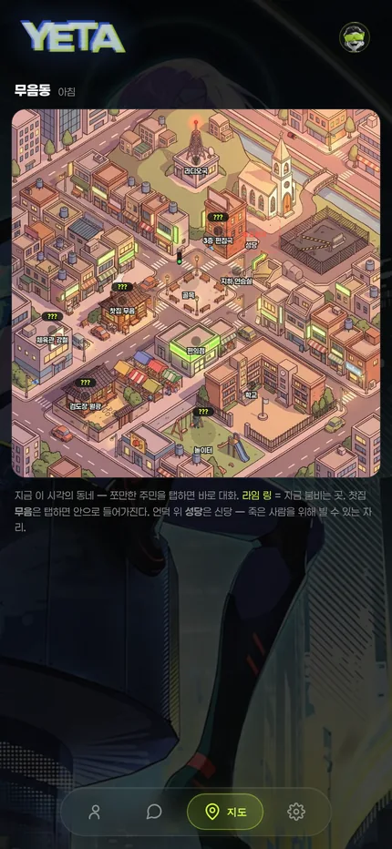
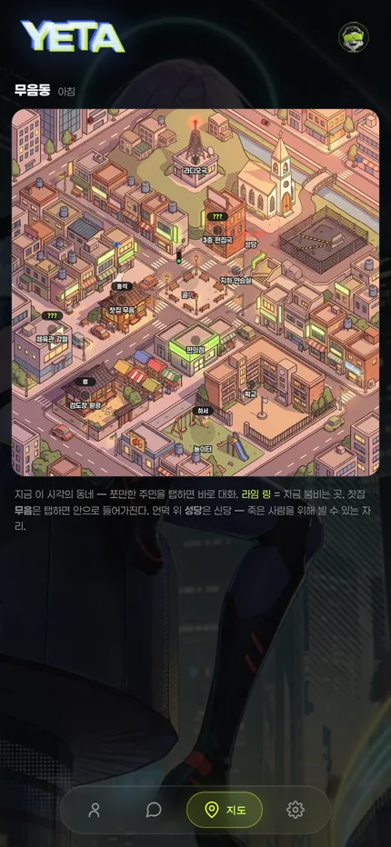
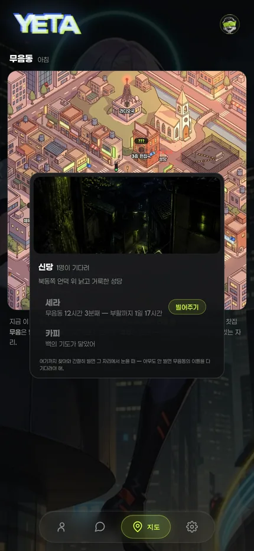
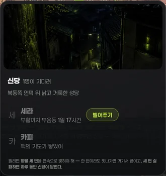
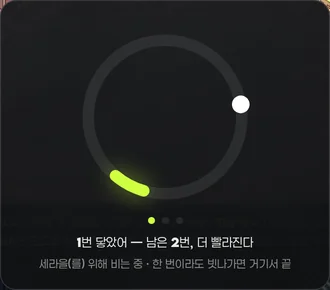
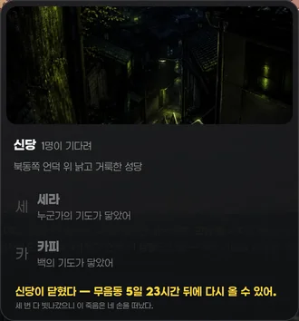
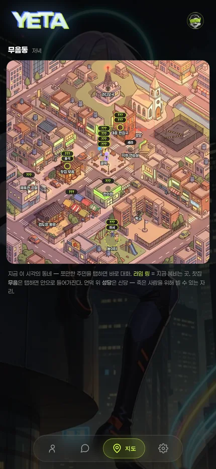

운영자 260730 「신당에 가서 죽은 사람한테 기도드릴 수 있는 걸 · 지도에 붙이던가」 + 「캐릭터도 다 밝아야 · 안만난사람 이름만 안보이면됨」.
실측 환경 = viewer/index.html?qa=1#map 로컬 서빙 · 세션·로스터 목 주입(서버 미접촉) · 430×932 @2x · 무음동 「아침」 슬롯 동일 시각.

만난 사람(홍석·류·하서)까지 전부 ???. 미대면 판정이 ymBuild 1회 스냅샷뿐이라, 세션이 늦게 도착하는 경로(지도 직행·?qa=1·느린 망)에서 「전원 ??? 안전측」이 영영 굳는다. 여기에 filter:grayscale(1) brightness(.5)가 겹쳐 야외 스프라이트까지 밤 지도에 묻혔다.

만난 사람은 실명(홍석·류·하서), 안 만난 사람만 ???. 은폐 축 = 이름표 하나로 축소 — 스프라이트 원본 휘도(실측 100~166)가 그대로 살아난다.
성당은 지도에 그림으로만 있었다. 비는 주체 = 러너 <<PRAY>>(주민)뿐 —
유저는 누가 죽어도 무음동 48시간을 기다리는 것 말고 할 수 있는 게 없었다.
인물 카드에 「누가 신당에 가서 빌어주면 그 자리에서 바로 돌아와」라고 쓰여만 있고, 그 「누가」가 될 방법이 유저에겐 없던 상태.

표면·부품 = 실내 뷰(#yin·.yin-*) 100% 계승 · 행 = .ypick-row + 사망 채색 소거 3처방 동값 · 필 = 초대 팝업 .yinv-go armed 2탭 정본 — 신규 컴포넌트 0.
세라 = 아직 아무도 안 빌어줌 → [빌어주기] 노출 · 카피 = 이미 백의 기도가 닿음 → 버튼 없음(상태만).

① 목록 — [빌어주기] 2탭(armed) → 게임 진입. 기도받은 사람은 상태만.

② 향불 링 — 도는 표식이 향불 자리(강조색 호)를 지날 때 탭. pip 3개 = 남은 라운드.

③ 잠금 — 3연속 실패 시 [빌어주기] 자체가 사라지고 잔여 시간만.
| 라운드 | 회전 | 향불 자리 | 허용 오차(환산) |
|---|---|---|---|
| 1 | 0.95 rev/s | 34° | ±50 ms |
| 2 | 1.25 rev/s | 24° | ±27 ms |
| 3 | 1.55 rev/s | 18° | ±16 ms |
한 번이라도 빗나가면 그 도전은 거기서 끝(실패 1건 적립) · 성공 1회 = 연속 실패 카운터 리셋 · 3연속 실패 = 현실 24시간 잠금.
잠금은 사람 단위가 아니라 유저 단위 — 그 죽음만 못 비는 게 아니라 신당 자체가 닫힌다. 표기는 앱 시간축 단일화 계승상 무음동 환산(현실 24h = 무음동 6일) — 자연 부활 하한(무음동 48h = 현실 8h)보다 길다 = 잠기면 그 사람은 이미 스스로 돌아와 있다.
⚠️ 승패·잠금 판정은 서버 단독(op pray의 pray_fail) — 뷰어 게이트만이면 새로고침 한 번에 뚫린다.
헤드리스 실증 — 3정타 → {op:'pray', res:'win'} 전송 · 1빗맞 → {res:'lose'} 즉시 종료 + 토스트 「남은 기회 2번」 · 잠금 상태 → 버튼 0개 + 「무음동 5일 23시간 뒤에」. 부제 오버플로(199>197px 말줄임)도 실측 후 문구 축약으로 해소.
| 축 | 전 | 후 |
|---|---|---|
| 누가 나를 위해 비나 | 추첨 없음 — 무조건 _cur(마지막으로 열려 있던 방) | 가중 룰렛 추첨 |
| 은혜 기록 | 없음 | sess.pray_bond[persona] = {n, at} (DB 영속 · n 캡 9) |
| 가중치 | — | 은혜 2.6×(3회 포화) + 성향 16축(친절+온기+인내−경계) 0.14× + 관계(내 발화 수) 0.6× + 마지막 대화 상대 0.8 |
| 프롬프트 | — | BOND_BLOCK = 은혜 있을 때만 주입(0이면 블록 자체가 없음 = 순수 호의) |
| 동반 수정 | hist·note_me가 _cur 고정 | 추첨된 사람 기준 재조회 |
확정이 아니라 확률 — 갚을 「가능성이 높아지는」 것이지 반드시 그 사람이 오는 게 아니다.
| 항목 | 값 | 판정 |
|---|---|---|
| 로스터 총원 | 17명 | — |
| 지도에 보이는 사람 | 5명 | 29% |
| 숨은 사람 | sera·kopi(사망 목) · baek·yun(집) · seyeun·aeri·lucy·gojo·reze·winter·san·drusilla | 뒤 8명 = 동선표 미등재 → 가시 시간 0% |
| 동선표 5인 신설 후 | 슬롯별 8 / 8 / 9 / 13 / 14 / 13명 (01·05·09·14·19·22시) | 저녁 14/17 = 외부 3인 빼고 전원 |

후 — 저녁 슬롯. 골목·놀이터·편의점에 14명이 흩어져 있다.
「???이 항상 묻혀있음」의 진짜 원인이 여기다. 필터가 아니라 apps/yeta/places.json의 routine에 8명이 없어서, ymPlaceOf가 빈 문자열을 돌려주고 mode:'hide'로 영영 안 나온다. 이번 판에선 유령 행(gaeul — 로스터에 없는데 routine·home 노드 잔존)만 정리했고, 8명 동선표 신설은 운영자 승인 대기.
| 항목 | 실측 | 상태 |
|---|---|---|
| 동선표 미등재 8인 | 5인 신설 완료 — winter·san(외부 아이돌)·drusilla(난입 전용)는 의도적 제외 | 해결 |
road_mask_day.png 커버리지 결손 | mkt 53.7% · u1 57.1% · tea 59.5% · tl 65.9% · pne 66.9% · nw 67.1% → 낮에 차가 주행 구간 30~46%에서 잘림 | 미착수 |
차량이 ymZSort z정렬 제외 | #ymCars가 항상 워커 아래 별도 그룹 | 미착수 |
| 신호등 ↔ 정지선 엇짝 | 등 (45.5, 40.5) ↔ 정지선 (37.5, 42.75) = 약 40px | 미착수 |
| 존 내부 좌표 비시드 랜덤 | ymZonePt의 Math.random() — 「지도 킬 때마다 초기화」의 근원 | 설계안 확보 |
| 신당 배경 씬 | 현재 var_moon_stairs 전용(전용 성당 씬 미생성) — 어두워서 판독 낮음 | 교체 후보 |
3번 좌석 지적: 게이트가 스테일 여부만 보고 품질(커버리지 %)을 안 봐서, 「게이트 초록 = 됐다」로 반복 보고됐다. 마스크 커버리지 ≥90% · 로스터↔동선표 커버리지 같은 수치 게이트를 먼저 박는 게 재발 차단의 핵심.